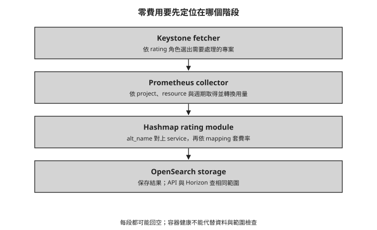
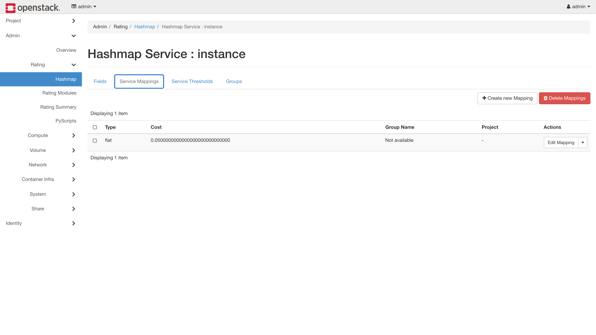
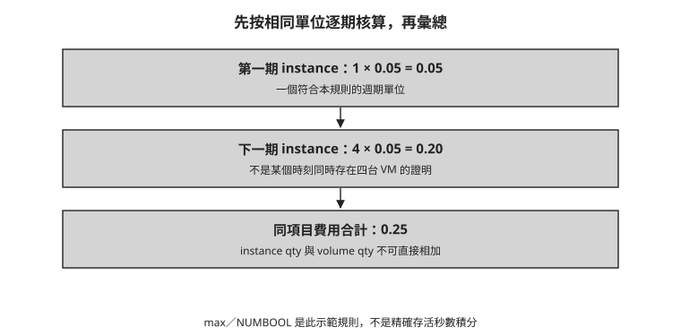
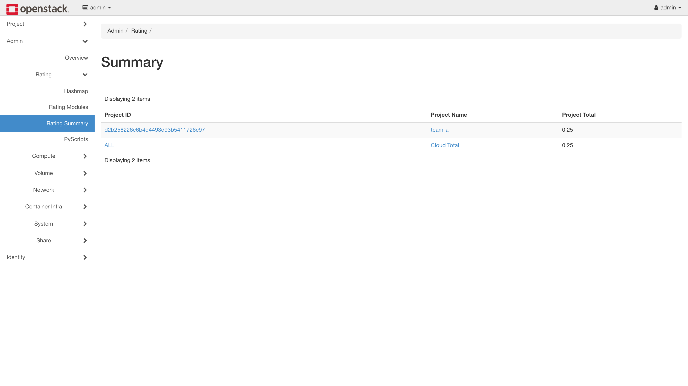

Day 30: 計算租戶費用——選取專案、套用費率與逐期核對¶

Prometheus 查得到 team-a 的用量，費用摘要卻一直是 0。你可能先懷疑費率設錯，其實也可能根本沒有專案被選進計算。這一章部署 CloudKitty，沿著「選專案、取用量、套費率、存結果」逐段查驗。讀完之後，你能找到零費用出在哪個階段，也能把結果對回同一租戶、同一週期與同一計費項目。
先分清楚費用計算與完整帳務¶
CloudKitty 做的是 rating：依規則把用量轉成費用資料。它不會因此替你完成付款、發票、稅務、退款或對帳爭議處理。本章的 $0.05 等數值是示範費率，不代表實際貨幣或市場報價。
需要 Day 21 的 Prometheus／OpenSearch、Day 28 的計量，以及 Day 27 的兩個專案。以管理員身分操作設定；先清除 application credential 與 OS_SYSTEM_SCOPE 殘留，再載入管理員 openrc。CLI 命令在已安裝 OpenStack 工具的虛擬環境執行，10.0.0.4、inventory 與 UUID 需換成自己的值。
下圖把處理過程分成四段。Fetcher 決定要處理哪些專案，collector 取回用量，rating module 套費率，storage 保存結果。

四段都設定好才會得到有意義的金額。容器健康不代表專案清單非空，也不代表已啟用計價模組。
步驟 1：部署 collector 與 storage¶
本章使用 Prometheus collector、OpenSearch storage。明確指定後端，避免沿用套件的 Gnocchi 預設：
sudo tee -a /etc/kolla/globals.yml << 'EOF'
# Day 30: CloudKitty 計費(prometheus collector + 重用 Day 21 的 OpenSearch)
enable_cloudkitty: "yes"
cloudkitty_collector_backend: "prometheus"
cloudkitty_storage_backend: "opensearch"
EOF
source ~/kolla-venv/bin/activate
kolla-ansible deploy -i ~/all-in-one --tags cloudkitty
本課 Kolla 模板能帶入既有服務位址與 Prometheus 認證，相關段落是：
[collector_prometheus]
prometheus_url = {{ cloudkitty_prometheus_url }}
prometheus_user = admin
prometheus_password = {{ prometheus_password }}
這與 Day 29 的 Aodh 整合不同：CloudKitty 有專用帳密設定。部署後仍要查實際產生的設定與連線結果，不能只依同屬 OpenStack 就假設設定方式一致。
步驟 2：決定收哪些指標、如何解讀¶
先從 /etc/kolla/passwords.yml 讀取自己的 prometheus_password 並設定 shell 變數 PW，沿用 Day 28 的方式；不要假設換終端機後仍保留變數。查看來源有哪些指標：
curl -s -u admin:$PW --get http://10.0.0.4:9091/api/v1/query \
--data-urlencode 'query={job="openstack-telemetry"}'
power_state 4 條序列 ← 機器存在 = 計費主軸
volume_size 4 條序列 ← 儲存 GB
cpu 4 條序列
memory_usage 4 條序列
network_incoming_bytes 4 條序列
...
本章挑 power_state 與 volume_size，映射成計費項目 instance 與 volume。Kolla 沒提供這條 Prometheus 路線所需的完整 metrics.yml，需自行寫入：
sudo mkdir -p /etc/kolla/config/cloudkitty
sudo tee /etc/kolla/config/cloudkitty/metrics.yml << 'EOF'
metrics:
# 機器時數:power_state 開機中為 1,NUMBOOL 把任何非零轉成 1
power_state:
unit: instance
alt_name: instance
groupby:
- project_id
- resource_id
mutate: NUMBOOL
extra_args:
aggregation_method: max
# 儲存:volume_size 單位已是 GiB
volume_size:
unit: GiB
alt_name: volume
groupby:
- project_id
- resource_id
extra_args:
aggregation_method: max
EOF
alt_name 是套費率時使用的名稱；groupby 保留 project/resource，避免把不同專案或資源合在一起。unit 是記錄給人看的單位名稱，不會自動換算數值。
這份規則究竟算什麼¶
NUMBOOL 會把非零值轉為 1，並不是「只接受開機狀態 1」。其他非零 power-state 也可能算入。因此這個示範不能直接宣稱是只對 RUNNING 秒數收費；正式規則要先決定哪些狀態應計費，再依資料模型篩選或映射。
Collector 產生的查詢形狀如下：
它對每個 resource/project 取窗口中的最大值，之後才做 NUMBOOL。只要窗口內符合非零條件，就可能計一個週期單位；這不是按精確存活秒數比例計算。例如只存在部分小時的 VM，也可能被這份規則計成一個小時週期。
而 Day 28 的 Pushgateway 仍可能曝露已刪 VM 的舊值，每次 scrape 都形成新樣本。max_over_time 不會自動排除這些資源，所以這份練習尚未驗證資源刪除後一定停止計費。
使用實際 collector 的 schema 驗證¶
在已載入 cloudkitty.conf 的容器內驗證，才能使用 Prometheus 的 schema：
sudo docker cp /etc/kolla/config/cloudkitty/metrics.yml cloudkitty_api:/tmp/m.yml
sudo docker exec cloudkitty_api python3 -c "
import yaml
from cloudkitty import collector
from oslo_config import cfg
cfg.CONF(['--config-file','/etc/cloudkitty/cloudkitty.conf'], project='cloudkitty')
print('生效的 collector =', cfg.CONF.collect.collector)
for k,v in collector.validate_conf(yaml.safe_load(open('/tmp/m.yml'))).items():
print('✅', k, '| groupby =', v.get('groupby'))
"
生效的 collector = prometheus
✅ power_state@#instance | groupby = ['resource_id', 'project_id']
✅ volume_size@#volume | groupby = ['resource_id', 'project_id']
結果顯示 collector 是 prometheus，且兩項規則通過結構驗證。若環境錯用 Gnocchi 預設，會出現不相關的必填欄位錯誤：
結構驗證通過仍不等於費用語意正確。確認規則符合預期後，重新執行 kolla-ansible deploy -i ~/all-in-one --tags cloudkitty 套用。
步驟 3：啟用 hashmap 並設定費率¶
Hashmap 模組把選定的服務或屬性對到費率。先看模組狀態：
本課預設只開 noop，它不計價。啟用 hashmap，再建立與 alt_name 同名的服務：
openstack rating module enable hashmap
IID=$(openstack rating hashmap service create instance -f value -c "Service ID")
VID=$(openstack rating hashmap service create volume -f value -c "Service ID")
接著建立 flat 費率。這裡的示範是每個一小時週期的 instance 單位 0.05、GiB 單位 0.01；若改 period，必須重新確認費率及週期單位，不能直接沿用「每小時」的解讀。
本課 CLI 與 API 有參數不相容，使用 API 建立：
TOKEN=$(openstack token issue -f value -c id)
CK=http://10.0.0.4:8889
for pair in "$IID:0.05" "$VID:0.01"; do
curl -s -X POST "$CK/v1/rating/module_config/hashmap/mappings" \
-H "X-Auth-Token: $TOKEN" -H "Content-Type: application/json" \
-d "{\"service_id\":\"${pair%:*}\",\"type\":\"flat\",\"cost\":\"${pair#*:}\"}"
done
✅ cost= 0.0500000000000000000000000000 | type= flat
✅ cost= 0.0100000000000000000000000000 | type= flat
回傳值顯示兩筆 mapping 已建立。若 token 過期，重新取得；CK 也要使用自己的 CloudKitty endpoint。

Horizon 的 Service Mappings 頁也可檢查同一筆設定。API 與畫面要對到同一個服務名稱，不要重複建立 mapping 來處理查不到的情況。
步驟 4：選出要計算費用的專案¶
有用量與費率，摘要仍可能是零：
先看 processor 的 fetcher 日誌：
Number of tenants to rate : 0 表示它沒有選中任何專案。這個 fetcher 預設要求 cloudkitty 服務使用者在該專案有 rating 角色。以管理員確認服務使用者 ID，再替本章 domain 下兩個專案指派：
CKUSER=$(openstack user show cloudkitty -f value -c id)
for P in team-a team-b; do
openstack role add --user $CKUSER --project "$P" --project-domain day27-corp rating
done
sudo docker restart cloudkitty_processor
上面的 restart 是讓本課練習立即重新讀取專案清單；正式環境要配合處理中的工作安排重啟。重新處理後，原紀錄選到兩個專案：
這只確認選取範圍，不表示它們都有可計價資料。
步驟 5：按週期、專案與項目核對¶
Period 是收集／計價的週期，本課是 3600 秒。Wait periods 預設為 2，讓近期資料先等待兩個週期再處理；實際看見結果的延遲還受週期邊界、處理進度與補算影響，不是精確固定兩小時。
先查按 project 分組的摘要：
{"columns": ["begin", "end", "qty", "rate", "project_id"],
"results": [["2026-07-01T00:00:00+00:00", "2026-08-01T00:00:00+00:00",
5.0, 0.2500000037252903, "d2b258226e6b4d4493d93b5411726c97"]]}
原紀錄中 team-a 的 instance 數量合計 5，費用約 0.25。摘要是區間總和，要再看 /v2/dataframes 的每個週期，不能拿單一時刻的 VM 台數直接比：
| 原紀錄的週期 | instance 數量 | 套用費率 | 結果 |
|---|---|---|---|
| 第一個小時 | 1 | 0.05 | 0.05 |
| 下一個小時 | 4 | 0.05 | 0.20 |
| 合計 | 5 個週期單位 | 0.25 |
這裡的 4 是該窗口查詢得到的資源數，不等於同時有四台 VM，也不能證明每台都執行滿一小時。請先看懂本章 max／NUMBOOL 規則，再解讀它和實際執行時間的差別。
圖中刻意把每期數量與費率配在一起，最後才相加：

instance 與 volume 的 qty 單位不同，不可把兩者的數量直接相加。費用可以按同一幣值規則彙總，但仍須能拆回來源資料。
兩個專案與儲存項目的既有結果¶
後續保存的核對結果同時包含兩個專案及 volume：
| 專案 | 項目 | 原紀錄用量 | 費率 | 金額 |
|---|---|---|---|---|
| team-a | instance | 13 個一小時週期單位 | 0.05 | 0.65 |
| team-a | volume | 10 GiB 週期單位 | 0.01 | 0.10 |
| team-b | instance | 2 個一小時週期單位 | 0.05 | 0.10 |
| team-b | volume | 6 GiB 週期單位 | 0.01 | 0.06 |
team-a 合計 0.75、team-b 合計 0.16，四筆都能按費率核算。這支持這些樣本的分組與乘法結果，不足以證明完整租戶隔離、所有計費狀態或刪除同步都正確。原紀錄沒有留下這段補驗建立各資源的完整命令，這裡保留結果，沒有補造可直接重跑的輸出。
用 Horizon 核對畫面¶
只部署 CloudKitty 不會更新 Horizon。先部署其面板設定：
再打開 Admin → Rating → Rating Summary：

畫面的 project 名稱與費用要對回 API 使用的範圍。Hashmap 頁管理費率，Rating Modules 頁查看模組，Rating Summary 看結果；Project → Rating 則是專案端檢視。本章沒有測完每個角色的資料存取邊界。
疑難排解¶
Prometheus 有用量，但沒有專案被計算¶
症狀：零費用且 fetcher 顯示：
原始碼的篩選條件是：
# cloudkitty/fetcher/keystone.py
if not ignore_rating_role:
roles = self.admin_ks.roles.list(user=my_user_id, project=tenant)
if 'rating' not in [role.name for role in roles]:
tenant_list.remove(tenant) # ← 沒有 rating 角色 → 直接移除
修法：依步驟 4 指派 rating 角色；單一專案的原操作如下，已補明確 domain：
CKUSER=$(openstack user show cloudkitty -f value -c id)
openstack role add --user $CKUSER --project team-a --project-domain day27-corp rating
也有 ignore_rating_role 設定，但它會改變要處理的範圍，不能只為消除空清單就直接對所有專案啟用。
改 Prometheus collector 後仍要求 Gnocchi 欄位¶
原因：collector 與 metrics 設定沒有同步，或驗證工具沒載入相同的服務設定。修法：依步驟 2 檢查生效的 collector、metrics.yml 與 schema，再重新部署。
有專案與資料，費用仍為零¶
原因：本課預設啟用 noop、未啟用 hashmap，或 alt_name 沒對到有費率的服務。修法：先列模組，再核對 service 與 mapping：
不要把「沒有可計費專案」與「沒有計價規則」混為同一個問題。
改了角色，processor 尚未重新處理¶
本課版本在處理迴圈末尾等待 collect period：
LOG.debug("Finished processing all storage scopes with worker ...")
# FIXME(sheeprine): We may cause a drift here
time.sleep(CONF.collect.period)
因此設定更新後可能要等下一輪。實驗中使用重啟讓它重新讀取：
這只證明重新選到專案，還要檢查計量 scope（本章按 project_id 切分的處理範圍）的進度和待結算週期。不要為了讓畫面立即出數字就隨意縮短 period，因為它也改變計價週期。
全新的 scope 另有補算行為，沒有時間狀態時從當月開始：
# cloudkitty/utils/__init__.py
def check_time_state(timestamp=None, period=0, wait_periods=0):
if not timestamp:
return tzutils.get_month_start()
因此短暫零費用也可能是尚未處理到有資料的週期。查看進度後再決定是否需要介入。
mapping create 回 Unknown attribute: name¶
以下是在 python-cloudkittyclient 6.1.0 與 CloudKitty 22.0.1 組合的失敗命令：
{"faultcode": "Client", "faultstring": "Unknown attribute for argument mapping_data: name",
"debuginfo": null} (HTTP 400)
原因：客戶端送出 API 不接受的 name。修法：用步驟 3 已驗證的 API 內容或 Horizon 建立；這是此版本組合的問題，不能推成所有 2025.1 安裝都會失敗。查結果時可用 /v2/scope、/v2/dataframes、/v2/summary，並依伺服器支援的 API 參數操作。
想一想¶
- 費用是 0，但 Prometheus 有數字。你會依哪個順序查專案清單、模組、mapping 與處理進度？
- VM 只存在十分鐘，這份 max／NUMBOOL 規則一定會按六分之一小時計算嗎？
- instance 的 qty 是 5，volume 的 qty 是 10，能否宣稱總用量是 15？要怎樣核對才有意義？
小結¶
費用計算先決定處理哪些專案，再決定讀取與轉換哪些用量，最後才套費率。核對時保留專案、資源、週期與項目，才能辨認零費用或數量差異。這份示範驗到機器與儲存樣本的計價結果，仍缺少資源生命週期同步、完整狀態規則與正式帳務流程；有金額並不代表已能正確向客戶收費。
延伸閱讀¶
想再深入，可以從這幾份開始：
- CloudKitty 2025.1：rating 與各元件的用途。
- Collector configuration：NUMBOOL、單位、groupby、period 與 Prometheus 查詢。
- Hashmap rating module：費率與 mapping。
- Kolla CloudKitty 指南：部署設定。
下一步¶
Day 31 回到多節點環境，用 Masakari 測試 VM 恢復。計算用量之外，還要確認故障後能恢復哪些狀態，以及自動處理之前需要哪些隔離前提。